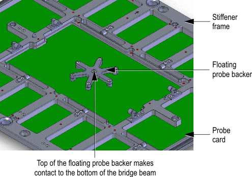
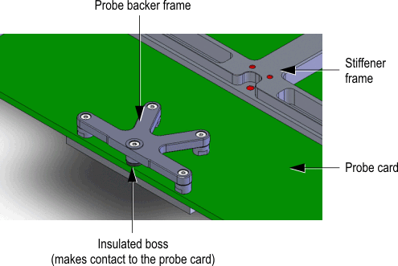

Floating probe backer
The floating prober backer consists of a probe backer which is supported by the probe card PCB.
Note The drawings in this guide serve as conceptual descriptions only and may
differ from the latest original design drawings. For the original drawings see Direct-Probe probe card layout information and Direct-Probe stiffener.
Recommendation
Advantest recommends this design when the component placement in the central area is restricted.
Design example

The probe backer is only supported by the probe card (printed circuit board = PCB). However, since the top of the probe-backer still contacts the bottom of the bridge beam, the wafer-to-probe contact load is still transferred similarly.

Note More effort may be required to correctly adjust and planarize the
floating probe-backer. Implementation of the type is typically recommended when component
placement in the central area is restricted.
Functional changes
- Introduced in SmarTest 6.5.4